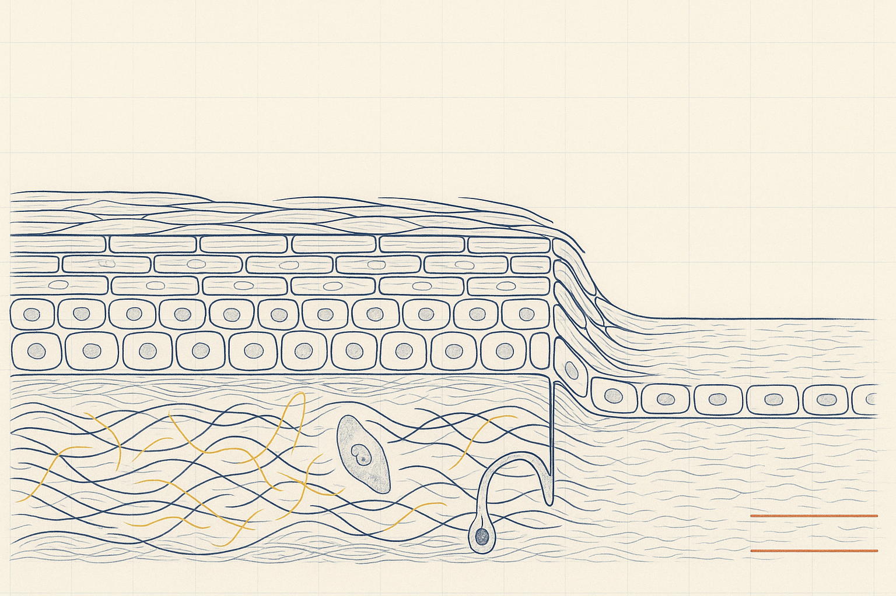
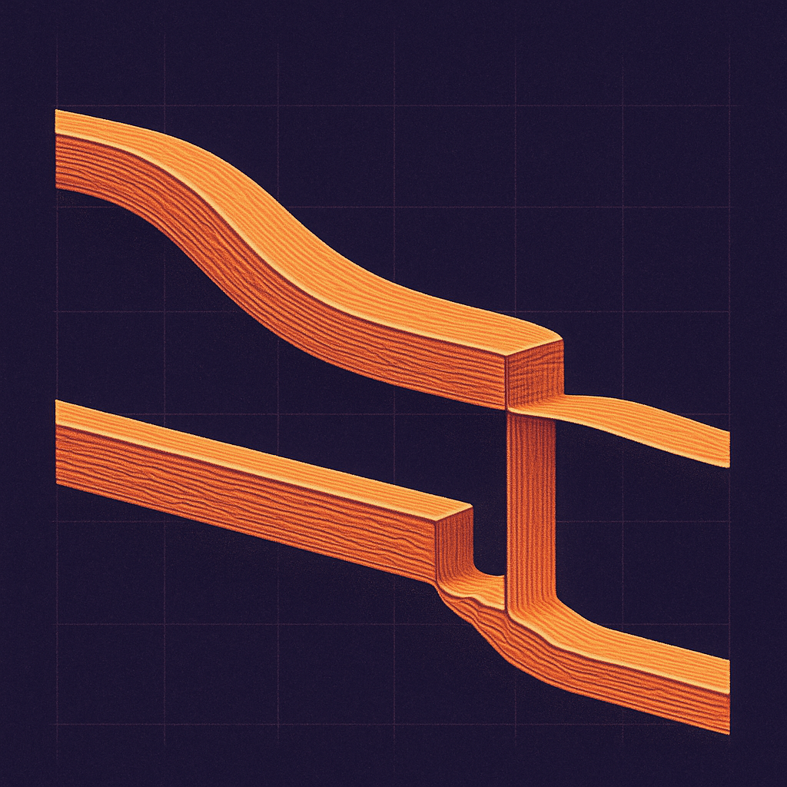
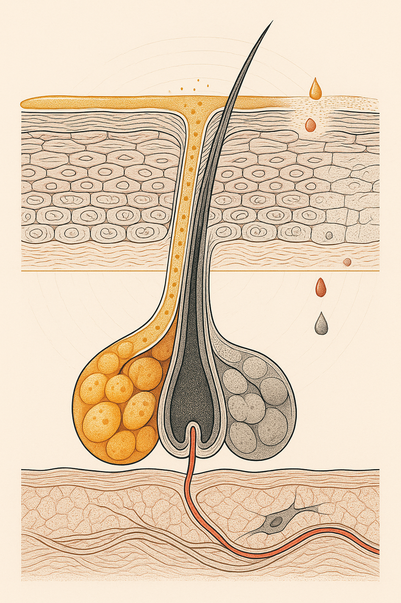

Review below. Reply approve to publish the Facebook post, or tell me edits.

You did not change anything.
Same cleanser. Same serum you have used for four years. Same sunscreen, same sleep, roughly the same amount of wine. And yet somewhere in the last twelve months your skin stopped behaving the way it used to. Drier by lunchtime. Flatter in photographs. Slower to settle after a spot or a scratch. When you mention it, someone says, kindly, that you are getting older.
That answer does not quite fit. Getting older is gradual. This was not.
There is a second clock running, and it is worth knowing which one you are hearing.
We tend to file hormones under periods, sleep and mood, and skin under skincare. Biologically that division does not hold. Oestrogen receptors are present on keratinocytes in the epidermis, on dermal fibroblasts, on sebaceous glands and on hair follicles. The review by Thornton (2013) sets out how widely distributed that receptor expression is across skin tissue.
The practical consequence is simple. A whole-body hormonal shift is not an abstract internal event. It is legible on the face, because the face contains cells that were listening the whole time.
This is the part almost nobody explains, and it is the heart of it.
Chronological ageing and sun damage accumulate on a slope. It is a gentle, roughly constant gradient: a little less firmness each year, a few more pigment spots each summer, the slow arithmetic of decades. Nothing about a slope feels like an event.
The oestrogen-linked component does not appear to move that way. Studies that measured skin collagen against oestrogen status reported the steepest proportional decline concentrated in the earliest postmenopausal years, rather than spread evenly across the following decade (Brincat 1987, Affinito 1999, reviewed in Calleja-Agius 2013).
Say that carefully, because the careful version is the useful one. That is what those studies found in the women they measured. It is not a law of nature, not a schedule anyone can hand you, and not a set of numbers to apply to your own face. What transfers is the shape, not the figures.
The shape is a step. And a step is exactly what "nothing changed but everything changed" feels like from the inside. Several years of change can be experienced across a handful of months. That is not a failure of upkeep. You did not stop trying hard enough.
Sebaceous output is oestrogen-responsive, and it falls. The lipid film that used to buffer everything you applied is thinner. Your cleanser did not get harsher and your retinoid was not reformulated. They are simply sitting on a drier, less protected surface than the one they were chosen for. Same product, different terrain.
That description is more accurate than most clinical language. Dermal water-holding capacity and glycosaminoglycan content shift, and the visible result reads as flatness well before it reads as wrinkling. Skin that has lost plumpness photographs differently under the same light. It is why women often say the change is hard to point at and impossible to miss.
This confuses people because it looks like teenage skin arriving four decades late. It is not skin becoming oilier. It is a ratio moving. As oestrogen falls, circulating androgens are relatively less opposed, and androgen-sensitive sites (lower face, jaw, chin) respond accordingly. A different balance, not a return to adolescence.
Wound healing and barrier recovery are hormonally modulated (Gilliver, Ashworth and Ashcroft 2007). Which is why the small insults you used to absorb without consequence now leave a mark for a fortnight: a squeezed spot, a shave nick, an over-enthusiastic peel booked because you wanted to do something.
Here is the uncomfortable logic. If recovery is slower, the return on aggressive correction falls and the cost of it rises. The instinct at this stage is to escalate. Stronger acids, more actives, another in-clinic treatment stacked on the last one. The better move is usually the opposite: fewer insults, more consistency, and enough time between them for skin to actually finish healing.
A short repeatable list tends to outperform a long rotated one. Things you can do without provoking anything, done the same way most days, beat a rotating cast of actives cycled through in a state of low-grade irritation. Low-irritation habits suit a period when skin is slower to recover.
Two things are true at once, and holding both is the mature position.
The hormonal component is not something you caused or can undo with a product. Blaming yourself for it is wasted energy.
The non-hormonal share is still the largest slice you can actually move: cumulative sun exposure, heat, sleep debt, smoking. Daily sun protection remains the highest-leverage habit at any age, and it does not become less worthwhile because a second clock started ticking. If anything, protecting a slower-repairing surface matters more.
On hormone therapy: the skin-specific evidence is small and mixed. One prospective, randomised, double-blind, placebo-controlled study looked at hormone replacement therapy and skin ageing in postmenopausal women. It found only limited skin effects (Sator 2007). That is neither an endorsement nor a warning. It simply places it. HRT is a conversation to have with your GP about menopause as a whole, weighed on symptoms and health history, not a decision to make on skincare grounds.
Light therapy devices of this kind are cosmetic, not medicine, and nothing here replaces a conversation with your GP about perimenopause.
The value of understanding the step is not that it fixes anything. It is that it changes where your effort goes and how you feel about it.
You stop auditing your routine for a mistake that was never there. You stop reading a hormonal shift as personal negligence. And you put your attention on the part that genuinely responds to attention: protection, consistency, patience, and a light hand while repair is running slow.
Same face. Better information.
If you want a closer look, the mask we make is here.
One question worth answering in the comments, because the answers are more useful than any list: what showed up first for you, the dryness, the flatness, or the jawline breakouts?
Hashtags: #perimenopause #skinhealth #skinscience #menopauseskin #skinlongevity #womenshealth

Nothing in your routine changed. Your skin changed anyway. That is not you failing at skincare.
Here is the part almost nobody explains. Sun damage and chronological ageing accumulate gradually, a fairly constant drip across decades. Slope-shaped. The oestrogen-linked part of skin ageing does not behave like that at all. One body of research measured skin collagen against oestrogen status, not birthdays. The steepest decline sat in the earliest years after the change, rather than spread evenly across the decade that followed. Same total, very different shape. Step, not slope.
Worth saying plainly: that is the shape those studies found, not a fixed figure for any one person. What transfers is the shape, not the numbers.
Which is why "it happened overnight" is often a fair description of a real thing, and not imagination, and not neglect.
Two practical consequences. Skin in that window is also slower to settle after an insult, so the instinct to correct harder (stronger actives, more exfoliation, three new devices at once) often shows up as irritation, not improvement. Fewer inputs, held consistently, generally does better.
Perimenopause questions themselves belong with your GP, not a skincare brand.
Which showed up first for you, the dryness, the flatness, or the jawline breakouts?
If you want a closer look at a low-irritation daily habit, it is here: https://redermis.com.au/products/red-light-therapy-face-neck-mask
**CTA:** If you want a closer look at a low-irritation daily habit, it is here: https://redermis.com.au/products/red-light-therapy-face-neck-mask
**Hashtags:** #skinlongevity #perimenopause #skinscience #skinhealth #over40skin #hormonalskin
**IMAGE PROMPT:** Editorial science illustration in the style of Scientific American or New Scientist, square 1:1, iconic single motif, deep plum-indigo ground with ivory linework and ember-red and warm amber accents, bold shapes that read at 150px. Two paths cross the frame from an identical point at the upper left to an identical point at the lower right, both drawn as slim layered cross-sectional strata bands with fine engraved hatching inside them. The upper path descends as one smooth even gently curving ramp. The lower path holds almost level, then drops in a single sharp vertical cliff partway along, then holds almost level again to the same finishing height. Two ivory hairline rules mark the shared start height and the shared finish height so the eye sees the totals are equal and only the shape differs. Faint precise grid behind. Bans: no text, no letters, no numbers, no labels, no arrows, no rope, coil, spring, braid, twine, wicker or any craft object, no free-floating cells or organelles, no people, no faces, no product, no mask, no device, no lens flare, no photograph.

Your skin did not get more sensitive. It got less buffered.
Sebaceous glands carry oestrogen receptors. That is well described in the dermatology literature on oestrogen and skin.
As that signal falls in the years around perimenopause, sebum output falls with it, and sebum is part of the thin film that buffers everything you put on your face.
The cleanser did not get harsher.
The serum was not reformulated.
The surface it lands on changed.
That is why a product you used happily for five years suddenly starts to sting.
Worth knowing: this is a buffering problem, not an allergy.
Cleanse gentler, and give the film a chance to sit.
Apply actives to skin that is not stripped.
Space them out instead of dropping three new things in all at once.
Nothing here is medicine. It is skin, doing what a changing signal tells it to do.
Has a product you have used for years suddenly started stinging? Tell me what changed.
If you want a closer look at how we think about a slower-recovering barrier, link in bio.
**CTA:** If you want a closer look at how we think about a slower-recovering barrier, link in bio.
**Hashtags:** #perimenopause #perimenopausalskin #skinbarrier #skinscience #skinlongevity #40plusskin #australianskincare #skincaretips
**Title:** The hormonal clock in your skin: why perimenopause arrives as a step, not a slope
**Description:** Your routine did not stop working. Your skin's clock changed underneath it. Ageing moves on a slow slope, but the oestrogen-linked part appears to move as a step: a shape the research found, not a schedule. Oestrogen receptors sit on sebaceous glands, so as that signal falls the buffering film thins and familiar products sting. Consistency beats intensity while repair is slow. Save this for when yours stops working. Cosmetic use only, not medicine. Perimenopause questions suit a GP.
**CTA:** If you want a closer look, it is here: https://redermis.com.au/products/red-light-therapy-face-neck-mask
**Pin link:** the blog article, "Perimenopause skin changes: why it feels sudden (and what actually helps)"
**Hashtags:** #perimenopauseskin #skinbarrier #redlighttherapy #ledfacemask #skincaresciencetips
**Image:** reuses the Instagram image (instagram.png), generated at 1024x1536 (2:3 vertical), which is Pinterest's native vertical ratio. No separate Pinterest image is generated.